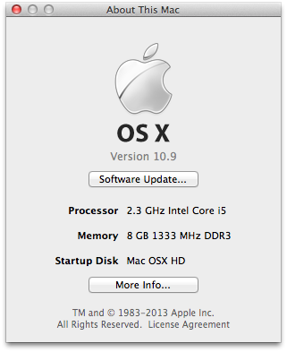
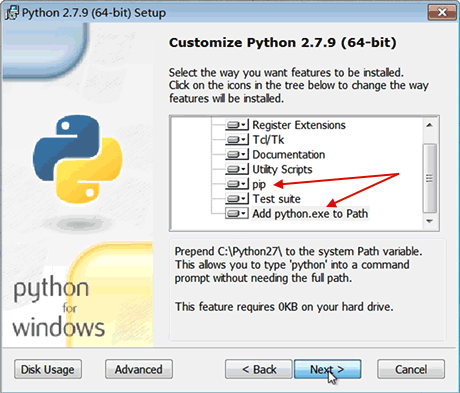
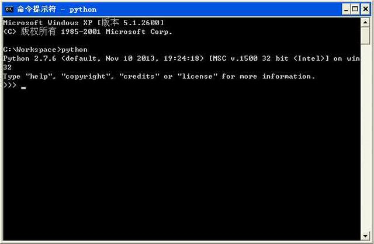

第2章 安装Python
因为Python是跨平台的，它可以运行在Windows、Mac和各种Linux/Unix系统上。在Windows上写Python程序，放到Linux上也是能够运行的。
要开始学习Python编程，首先就得把Python安装到你的电脑里。安装后，你会得到Python解释器（就是负责运行Python程序的），一个命令行交互环境，还有一个简单的集成开发环境。
2.x还是3.x
目前，Python有两个版本，一个是2.x版，一个是3.x版，这两个版本是不兼容的，因为现在Python正在朝着3.x版本进化，在进化过程中，大量的针对2.x版本的代码要修改后才能运行，所以，目前有许多第三方库还暂时无法在3.x上使用。
为了保证你的程序能用到大量的第三方库，我们的教程仍以2.x版本为基础，确切地说，是2.7版本。请确保你的电脑上安装的Python版本是2.7.x，这样，你才能无痛学习这个教程。
在Mac上安装Python
如果你正在使用Mac，系统是OS X 10.8或者最新的10.9 Mavericks，恭喜你，系统自带了Python 2.7。如果你的系统版本低于10.8，请自行备份系统并免费升级到最新的10.9，就可以获得Python 2.7。
查看系统版本的办法是点击左上角的苹果图标，选择“关于本机”：

在Linux上安装Python
如果你正在使用Linux，那我可以假定你有Linux系统管理经验，自行安装Python 2.7应该没有问题，否则，请换回Windows系统。
对于大量的目前仍在使用Windows的同学，如果短期内没有打算换Mac，就可以继续阅读以下内容。
在Windows上安装Python
首先，从Python的官方网站www.python.org下载最新的2.7.9版本，地址是这个：
http://www.python.org/ftp/python/2.7.9/python-2.7.9.msi
然后，运行下载的MSI安装包，在选择安装组件的一步时，勾上所有的组件：

特别要注意选上pip和Add python.exe to Path，然后一路点“Next”即可完成安装。
默认会安装到C:\Python27目录下，然后打开命令提示符窗口，敲入python后，会出现两种情况：
情况一：

看到上面的画面，就说明Python安装成功！
你看到提示符>>>就表示我们已经在Python交互式环境中了，可以输入任何Python代码，回车后会立刻得到执行结果。现在，输入exit()并回车，就可以退出Python交互式环境（直接关掉命令行窗口也可以！）。
情况二：得到一个错误：
‘python’不是内部或外部命令，也不是可运行的程序或批处理文件。
这是因为Windows会根据一个Path的环境变量设定的路径去查找python.exe，如果没找到，就会报错。如果在安装时漏掉了勾选Add python.exe to Path，那就要手动把python.exe所在的路径C:\Python27添加到Path中。
如果你不知道怎么修改环境变量，建议把Python安装程序重新运行一遍，记得勾上Add python.exe to Path。
小结
学会如何把Python安装到计算机中，并且熟练打开和退出Python交互式环境。